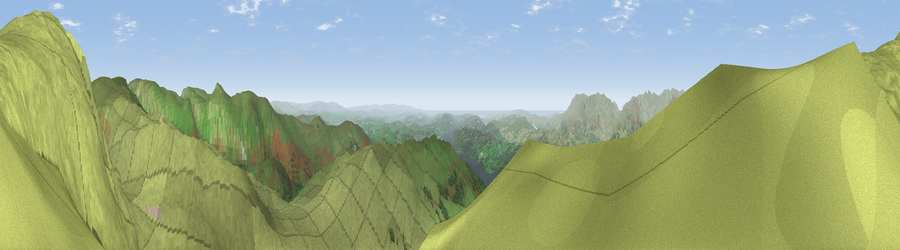

Viewpoint near Rydal
#1110 in England · top 7% of its area beats it · near RydalThe view, rendered

A 360° render of this exact spot computed from the terrain model, tree cover and land cover — summer colours, afternoon light, calibrated against photographs of famous viewpoints. Real trees, hedges and buildings will differ in detail.
The panorama
Grey silhouette: terrain skyline in each direction (720 bearings, Earth curvature and refraction included). Dashed green: skyline with trees (+15 m) and buildings (+8 m) as obstacles. Blue strip: how far the ground is visible on each bearing.
Where the view opens
Wedge length = distance to the farthest visible ground on that bearing (vegetation-aware). Rings at 10, 25 and 50 km.
What fills the view
87% grassland · 11% woodland · 1% water
Angular shares of the visible panorama (visual magnitude), not map area. Landscape diversity 0.19 (0–1 Shannon).
Key numbers
More beautiful places nearby
The staircase of upgrades: each row has a higher view potential than everything closer. Driving times are estimates from straight-line distance, calibrated against real road routing — check an actual route before setting out.
| Place | Direction | Drive | Score |
|---|---|---|---|
| Viewpoint near Rydal | NNE · 1 km | ~4 min | 80.8 |
| Ill Bell | E · 5 km | ~10 min | 80.9 |
| Fairfield | NW · 5 km | ~12 min | 81.0 |
| High Street (summit) | NE · 6 km | ~13 min | 82.6 |
| Viewpoint near Legburthwaite | NNW · 9 km | ~18 min | 83.8 |
| Viewpoint near Legburthwaite | NW · 10 km | ~20 min | 84.5 |
| Old Man of Coniston | SW · 15 km | ~27 min | 85.2 |
| Viewpoint near Finsthwaite | S · 19 km | ~32 min | 90.3 |
54.45875, -2.94246 · source: screening · position refined by local search. Computed location — check access rights before visiting.